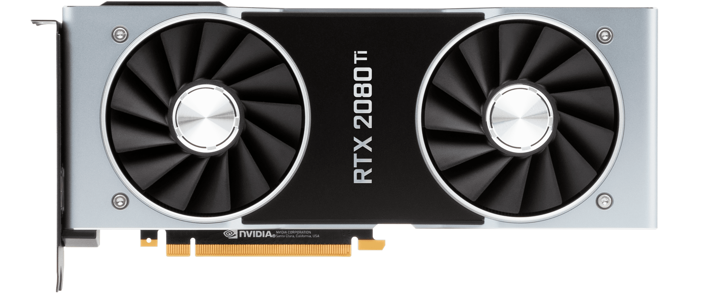
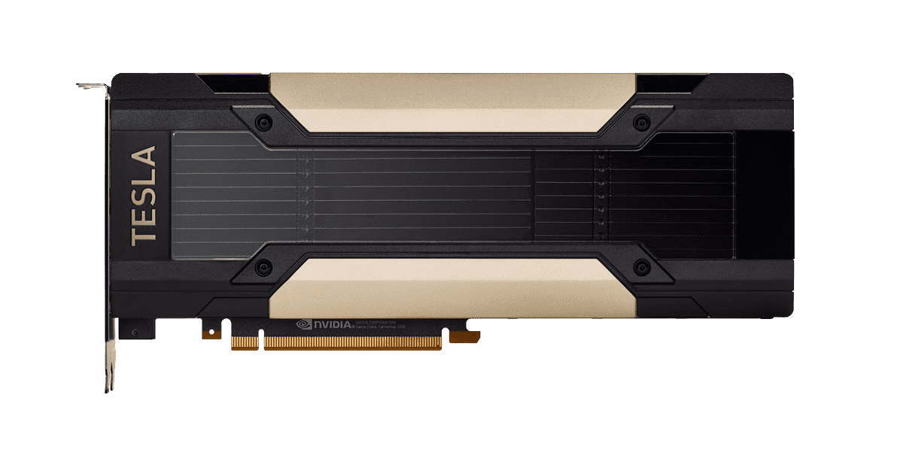

GeForce RTX 20 Series — семейство графических процессоров NVIDIA, представленное 20 августа 2018 в рамках конференции Gamescom. Чипы семейства GeForce RTX 20 основаны на новой архитектуре Turing, названной в честь английского математика, логика и криптографа Алана Тьюринга. Заявлено увеличение производительности до 6 раз в области трассировки лучей по сравнению с графическими процессорами предыдущего поколения. В продаже с 20 сентября 2018 года.
GTX 1080Ti
GeForce 10 Series — семейство графических процессоров NVIDIA, используемых в настольных компьютерах и ноутбуках. Чипы семейства GeForce 10 основаны на новой архитектуре Pascal, названной в честь французского математика, физика, философа Блеза Паскаля. Первые две модели, GeForce GTX 1080 и GeForce GTX 1070, были представлены в начале мая 2016 года. Выход состоялся 27 мая и 10 июня 2016 соответственно. По сравнению с предыдущей микроархитектурой Maxwell прирост производительности в компьютерных играх и программах составил около 40 %.

RXVEGA 64
Radeon RX Vega — серия видеокарт, производимых группой Radeon, структурным подразделением компании Advanced Micro Devices. Эти карты используют ядра архитектуры Vega, высокоскоростную память HBM2 и изготовлены по техпроцессу 14 нм FinFET. Графические ядра Vega относятся к пятому поколению GCN (Graphics Core Next). Им на смену в 2018 году придёт архитектура Navi. Первые видеокарты на архитектуре Vega были выпущены 14 августа 2017. Этими видеокартами были RX Vega 56 и RX Vega 64, по рекомендованной стартовой цене $399 и $499 соответственно.

TESLA V100
Tesla — название семейства вычислительных систем NVIDIA на основе графических процессоров с архитектурой CUDA, которые могут быть использованы для научных и технических вычислений общего назначения. Tesla не может полностью заменить обычный универсальный процессор, но позволяет использовать вычислительный ресурс множества своих ядер для решения определенного круга ресурсоёмких задач (вести параллельную обработку данных). Примерами таких задач могут служить симуляция свёртывания молекул белка, секвенирование ДНК, моделирование погоды, анализ финансового риска и т. п.
QUADRO RTX6000
Quadro — бренд графических карт фирмы NVIDIA, предназначенный для профессионального использования в рабочих станциях САПР, станциях компьютерной графики и создания цифрового контента. Графические процессоры, используемые в продуктах Quadro, идентичны процессорам в графических картах GeForce. Конечные продукты графических карт отличаются по существу драйверами устройств и профессиональным уровнем поддержки программного обеспечения. Видеокарты, разработанные для бизнес-приложений (финансовых, корпоративных, ECAD) и для многомониторных решений.